Медитативный ретрит
Мы создали для вас чат бот с медитативными практиками, упражнениями, психологическими техниками, лекциями и рекомендациями по созданию настоящей атмосферы природного ретрита. Наш ретрит поможет запустить процесс изменений и может привести к снижению уровня тревоги, менее интенсивным мыслям и чувствам, активации силы и мотивации на повседневные задачи, хорошему настроению, хорошему физическому состоянию, крепкому сну, надежде, оптимизму, чувству уважения к себе и свободе, вере в себя, устойчивости, внутренней опоре, проявлению лидерских качеств, радости, вдохновению, удовлетворению и эмоциональному наслаждению.
Вам подойдет наш ретрит, если вы периодически проживаете эти состояния:
Тревога
Безвыходность
Неуверенность
Все эти состояния негативно влияют на жизнь, эмоции и материальное положение. Очень сложно развиваться, радоваться, справляться с трудностями и наслаждаться, строить отношения, когда хотя бы одно из этих состояний присутствует в жизни.
Цели ретрита научиться менять негативные состояния на позитивные
Безопасность
Свобода
Радость
Мы создали легкую и приятную программу для начала позитивных изменений в вашей жизни.
ОЛЬГА
Сайт рыбатекст поможет дизайнеру, верстальщику, вебмастеру сгенерировать несколько абзацев более менее осмысленного текста рыбы на русском языке, а начинающему оратору отточить навык публичных выступлений в домашних условиях. При создании генератора мы использовали небезизвестный универсальный код речей. Текст генерируется абзацами случайным образом от двух до десяти предложений в абзаце,
АНДРЕЙ
Сайт рыбатекст поможет дизайнеру, верстальщику, вебмастеру сгенерировать несколько абзацев более менее осмысленного текста рыбы на русском языке, а начинающему оратору отточить навык публичных выступлений в домашних условиях. При создании генератора мы использовали небезизвестный универсальный код речей. Текст генерируется абзацами случайным образом от двух до десяти предложений в абзаце, что позволяет сделать текст более привлекательным и живым для визуально-слухового восприятия.
Как это работает?
Вся информация будет содержаться в умном Телеграм боте, а для получения обратной связи и общения с единомышленниками мы создали приватный чат.
- Вы заполняете регистрационную форму перед оплатой, оплачиваете.
- На почту, указанную в регистрационной форме, приходит ссылка на ТГ бот, логин и пароль.
- Переходите по ссылке и следуете инструкции, описанной в ТГ боте.
- Вас ждут рекомендации по созданию атмосферы, 8 медитативных практик, задания на 4 недели ретрита, техники борьбы с кризисными состояниями и полезная информация.
- Вы можете делиться обратной связью и впечатлениями в закрытом чате участников и возможно получить персональные рекомендации от создателей ретрита.